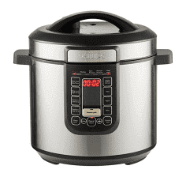
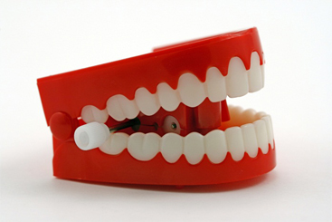

OverSeas (617) and interstate (07)
0411 839 534
The Messiahs Diet!
Healthy easy diet Especially for those that dont have much money, or may be, have a busy life style?
Fruit Juice
(Have throughout the day) the grains keep you full, and help fight fats and sugars....Good for you intestines.For those with Gum disease, or going bald?.
100 grams Rice bran
100 grams Oats Bread Bran
100 grams Psysilium Husks
200 grams Slippery Elm bark
Put in blender a Desert spoon daily, with your Smoothies, or juices
I have my main meal for Breakfast, Half a small bowl of Rice, with mixed frozen Asian Veggies, together, and cooked together.....
Add Coconut oil in the boiling water and if you want Turmeric
Coconut oil, in water, when cooking, (table spoon), and placed in fridge over night, cuts the calories in half......So they say?

Also use good for the gut, when cooked Cayenne Pepper
(Use half a bowl of Rice, with a topping of Dinner Bases found in Woolworths...
I use a pressure cooker, Easy cooking, only takes 20 minutes. Throw it all in and press button....simple.....
Add extra veggies to your Dinner Base if you want too? (Zucchini, sweat potato, peas, carrots)
I make enough for myself for 4 days....
For Example......
Sausage Hot Pot, Curry Sausages, Tuna Bake, Lamb Shanks, Honey, Mustard and Chicken
Savory Mince...Potato Bake, Meatballs, in tomato sauce...Country Casseroles and more
Just saut meats, add all the ingredients and sauce, put the lid on, and press the button
Done in 20 minutes
Dinner
1 small can of Salmon or Sardines with Olive Oil
Alternate days have 1 large tablespoon of Yogurt (Greek, optional) Fruit, and with 2 tablespoons of Muesli.
A lot of people have a Leaky gut, (holes in the intestines) due to stress, they are not getting the value from their foods and this is why a lot of people lose their teeth, and go bald....The grains, above, taken, daily can help youre intestines, taken in a smoothie.....Live bacteria, yogurt is good, for your gut, and teeth.... Tablets for Gum Disease can also be bought from your Naturopath (This may help?)
My Dentist wanted to take my teeth out in 2016, and I still got themFrom doing what I have mentioned.
Try taking Yogurt every day or Alternate days with this diet....Some say Yogurt, irritates, the stomach, some say it is good ?
Or have a light Salad...Most people need Iron tablets, that's why they are tired have no energy and moody. So with this diet please also take some iron tablets or beans with your salad, if you are having salad? And Women with Menstruals, really need iron. Thats why they are so uptight, and Bitchy....
Vitamin D and C tablets are good to take also for your teeth and bones, if you have any problems....
Helpful Tip
If you need a soluble drink with your medication etc , and you stomach is not full, have a glass of Soya Milk or Milk, and sometimes a piece of fruit....(banana)
White Teeth
Use Bicarb Soda with toothpaste, for white teeth
1/2 a teaspoon with little water, to cleanse your insides and of acids (At bed time)
Coconut oil Pulling,

it is known to help with plaque, cavities, Gingivitis, and Bacteria, in your Mouth, and teeth.Use a Tablespoon of Coconut oil , and swish gently, in your mouth for 15 to 20 minutes, and spit out in a paper towel, as it can clog your drain pipes, then clean your teeth, floss and mouth washYou could do this each day for 10 minutes May be when you have your regular shower? It may even whiten your teeth, also change your toothbrush, every month, or more?
Intestine Problems take IBS support Triple Action from Bioglan or you need a probiotic, and a prebiotic,,,,,,,Also my Grains in a Smoothie
Bacteria yogurt, sold in small bottles, at your store, It is a great probiotic, also Onions and Garlic for prebiotic.....
Almond Milk , (Unsweetened) from Aldi 40 calories a cup, compared to 250 calories a cup of milk, is a good way to go for Smoothies
Good Smoothie
The Grains for you intestines (Top of page) 1 Desert Spoon, for your intestines..
Frozen (cheaper) Blueberries, or mixed
Berries
Banana
Almond Milk (Unsweetened) from Aldi
Drinking Water is the Best way to go. For Diets.......but not all of us can tolerate just Water...
I drink sugar free coke, and lost weight, and a couple of coffees with artificial sweeteners, I use xylitol sugar, from the Health Store, and Woolworths Brand, carton of Skim milk, which is not like watered down milk, like some? Also One ordinary sugar, with you xylitol sugar, so it taste the same, as real sugar, I take two sugars....
(Make sure you clean your teeth a few times a day, for 2 minutes, floss and mouth wash, and eat well, also when drinking coke, especially)
Drinking Sugar free Coke can sometimes make you, hungry....well, eat sensibly and...have a banana 100 calories....
Helpful Tip:
Have a teaspoon of Spirulina Powder, with your Smoothie, also two small teaspoon of turmeric Powder is good for Diabetes, and the mind......Dementia
Turmeric, I find, taking two teaspoons a day, which I have in my smoothie, clears, up my Chronic Sinus
A good Diet,
You can lose 5 kilos or more a month
I lost 5 kilos, in a month, and also drank diet coke, so you can lose more, drinking water.....?
Basically Meat, Vegetables, and fruit......
No Dairy, No Fats, No sugars, No Carbs
High in Protein
Not a diet for long term, as you need calcium, for your teeth and bones...but the diet works......
For Example:
My Diet, that I lost a kilo a week.....Keep in mind if you are use to eating very little, you may put on weight first, but the Metabolism will kick in after a while, and you will eat well, and lose weight
Breakfast: 6am Smoothie
Lunch: 12 pm Small Meat and Vegetables
Dinner : 4 pm, A well portioned Stew, Casserole, or even Salmon with scrambled eggs
9 pm: Large glass, of Soya milk and a banana
I also have a banana, during the day if hungry?
Also lite milk, from Woolworths in a carton, for my coffees, and my xylitol sugar...One teaspoon and one normal
Plus I drink sugar free coke all day......
I lost a kilo a week, so you could lose more, if you drink water....?
Download The Messiahs Diet
No of Download